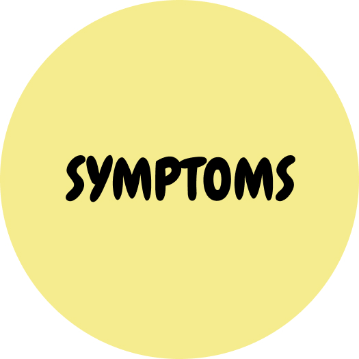
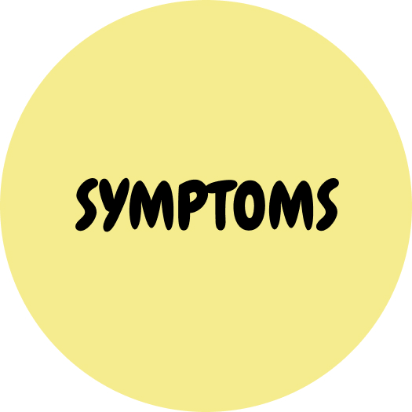

DEPRESSION
SLEEPING DISORDER
STRESS DISORDER
EATING DISORDER
ANXIETY DISORDER
FUN TIME
ANXIETY DISORDER
Click on the circles to learn more about anxiety disorder
Anxiety Disorders:
Anxiety is a feeling of fear, dread, and uneasiness. It might cause you to sweat, feel restless and tense, and have a rapid heartbeat. It can be a normal reaction to stress. For example, you might feel anxious when faced with a difficult problem at work, before taking a test, or before making an important decision. It can help you to cope. The anxiety may give you a boost of energy or help you focus. But for people with anxiety disorders, the fear is not temporary and can be overwhelming.
Anxiety disorders are conditions in which you have anxiety that does not go away and can get worse over time. The symptoms can interfere with daily activities such as job performance, schoolwork, and relationships.
PLEASE ask for help immediately, if:
You are:
- Having suicidal thoughts;
- Might harm yourself or others;
- Feeling physically uncomfortable.
Carnegie Mellon on campus resources:
- Call Counseling and Psychological Services (CaPS) at 412-268-2922;
- Reach out to your advisor;
- Schedule a meeting with University Health Services (UHS) for stress consultations, substance use & recovery services, and health advice at 421-268-2157.
Click here to find the nearest mental health facility to you!
We are here! Let us help.
 


 DEPRESSION
SLEEPING DISORDER
STRESS DISORDER
EATING DISORDER
ANXIETY DISORDER
FUN TIME
DEPRESSION
SLEEPING DISORDER
STRESS DISORDER
EATING DISORDER
ANXIETY DISORDER
FUN TIME